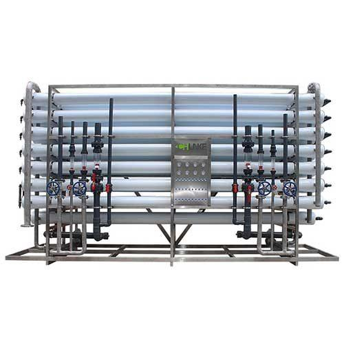

Salah satu keputusan paling penting dalam mendesain sistem RO adalah pemilihan membran. Membran adalah komponen yang menentukan rejection rate, recovery, konsumsi energi, dan umur sistem. Di pasar global, dua nama mendominasi: Dow Filmtec (sekarang dimiliki DuPont) dan Toray Industries dari Jepang. Hampir semua sistem RO premium di Indonesia menggunakan salah satu dari dua brand ini.
Pertanyaan yang sering diajukan klien TSM: "Mana yang lebih baik — Dow Filmtec atau Toray?" Jawaban jujur: tergantung aplikasi dan kondisi spesifik Anda. Keduanya tier-1 dengan track record puluhan tahun. Namun ada nuansa karakteristik yang membuat satu lebih unggul untuk aplikasi tertentu. Artikel ini membahas perbandingan teknis lengkap dan rekomendasi pemilihan berdasarkan jenis air baku Indonesia.
Dua Pemimpin Industri Membran RO
Dow Filmtec dan Toray bersama-sama menguasai sekitar 70-80% pasar membran RO global. Sisa pasar diisi oleh Hydranautics (Nitto Group), Koch Membrane, dan beberapa pemain Asia seperti CSM Korea dan LG Chem. Namun untuk aplikasi tier-1 dengan persyaratan reliability tinggi, hampir selalu pilihan jatuh ke Dow Filmtec atau Toray.
Mengapa kedua brand ini begitu dominan? Beberapa alasan: (1) konsistensi kualitas manufaktur dengan QC yang sangat ketat, (2) garansi pabrikan yang dapat diandalkan, (3) data engineering yang sangat lengkap termasuk software simulasi (ROSA dari Dow, IMSDesign/TorayDS3 dari Toray), (4) availability spare parts dan replacement di seluruh dunia, dan (5) track record puluhan tahun di semua jenis aplikasi.
Profil Dow Filmtec
Dow Filmtec didirikan pada 1977 oleh FilmTec Corporation, kemudian diakuisisi Dow Chemical pada 1985, dan sejak 2019 dimiliki DuPont setelah merger Dow-DuPont. Pabrik membran utama di Edina, Minnesota (USA). Filmtec adalah pelopor membran TFC (Thin Film Composite) polyamide yang sekarang menjadi standar industri.
Karakteristik Khas Dow Filmtec
- Keunggulan di SW (Sea Water) HRLE series — Dow SW30HRLE-440i adalah salah satu membran SWRO paling banyak digunakan di dunia, dengan rejection 99,8% dan recovery yang baik
- Stabilitas klorin sesaat lebih tinggi — Filmtec dapat menahan exposure klorin sampai 1.000 ppm-jam (cumulative) tanpa rejection drop signifikan; ini penting untuk situasi upset di pre-treatment
- Software ROSA — Software simulasi sistem yang sangat detail dan banyak digunakan engineer untuk desain. Output ROSA umumnya diterima oleh kontraktor dan auditor
- Variasi produk lengkap — Untuk hampir semua aplikasi (BW, SW, LP, NF, fouling-resistant, low-energy), Filmtec punya seri spesifik
- Ketersediaan spare — Stok di Singapura, Jepang, dan beberapa lokasi Indonesia memungkinkan delivery cepat
Profil Toray
Toray Industries adalah konglomerasi material Jepang yang membuat membran RO sejak 1972. Toray sangat dominan di pasar Jepang dan Korea, dan secara global terkenal untuk kualitas manufaktur dan inovasi material. Pabrik membran di Ehime, Jepang.
Karakteristik Khas Toray
- Keunggulan rejection di salinitas tinggi — Toray TM820 series sering memberikan rejection sedikit lebih tinggi (99,85% vs 99,8%) pada konsumsi energi setara untuk SWRO. Ini penting untuk aplikasi SWRO recovery tinggi atau air laut salinitas ekstrim.
- Toleransi terhadap fouling organik lebih baik — Toray TM720D dan TML series menggunakan permukaan membran khusus yang lebih tahan fouling dari air dengan TOC tinggi (air sungai, air permukaan)
- Konsistensi quality control — Manufaktur Jepang dengan QC yang sangat ketat. Variasi performa antar elemen Toray umumnya lebih kecil dari brand lain
- Software TorayDS3 dan IMSDesign — Tools simulasi yang detail untuk desain sistem
- Inovasi material baru — Toray sering memperkenalkan material baru lebih dulu (low-pressure series, biomimetic membrane research)
Perbandingan Teknis Spesifik
Untuk Sea Water RO (SWRO)
| Parameter | Dow SW30HRLE-440i | Toray TM820H-440 |
|---|---|---|
| Rejection Garam | 99,8% | 99,85% |
| Permeate Flow (test cond) | 32 m³/hari | 30 m³/hari |
| Tekanan Operasi Optimal | 55–70 bar | 55–70 bar |
| Stabilitas Klorin | Lebih baik (sampai 1.000 ppm-jam) | Standar (≤200 ppm-jam) |
| Harga (referensi) | Standar pasar | Sedikit lebih mahal (5-10%) |
Rekomendasi: Untuk SWRO standar dengan pre-treatment normal — Dow Filmtec memberikan value yang sangat baik. Untuk SWRO dengan air laut salinitas tinggi (>38.000 ppm) atau yang membutuhkan rejection ekstra, Toray TM820 series sering lebih tepat.
Untuk Brackish Water RO (BWRO)
| Parameter | Dow BW30-400 | Toray TM720-400 |
|---|---|---|
| Rejection Garam | 99,5% | 99,7% |
| Permeate Flow (test cond) | 40 m³/hari | 38 m³/hari |
| Tekanan Operasi Optimal | 12–15 bar | 12–15 bar |
| Toleransi Fouling Organik | Standar | Lebih baik (TML series) |
| Ketersediaan Stok | Sangat luas | Luas |
Rekomendasi: Dow BW30 adalah workhorse industri yang sangat reliable untuk BWRO standar. Toray TM720D atau TML series untuk air dengan TOC tinggi (air sungai, air dengan organik substansial).
Untuk Low Pressure RO (LPRO)
Untuk aplikasi air ledeng PDAM atau sumur dangkal, ada beberapa pilihan:
- Dow Filmtec LE-440 — Low energy series, tekanan operasi sekitar 7–10 bar, hemat 20-30% energi vs BW standar
- Toray TM710 — Setara dengan LE Filmtec dengan karakteristik yang mirip
Pada LPRO, perbedaan antara Dow dan Toray relatif kecil. Pilihan biasanya berdasarkan harga, ketersediaan, atau preferensi engineer.
Rekomendasi per Aplikasi Indonesia
Air Laut Indonesia (SWRO)
Air laut Indonesia umumnya bersih (vs Mediterania atau Timur Tengah), dengan salinitas standar 33-35.000 ppm. Dow SW30HRLE-440i atau Filmtec generasi terbaru adalah pilihan default — value, performance, ketersediaan stok, dan support local yang baik. Untuk lokasi spesifik dengan salinitas tinggi (Selat Sunda, Laut Banda), Toray TM820 dapat dipertimbangkan.
Air Sumur Pesisir Pulau Jawa
Air sumur pesisir di Jakarta, Surabaya, Semarang, dan kota pesisir lainnya umumnya BWRO range (TDS 1.500-4.000 ppm) dengan hardness tinggi dan kadang besi-mangan. Dow BW30-400 atau BW30FR (fouling-resistant) sangat cocok. Ketersediaan stok membran ini sangat luas di Indonesia dengan harga kompetitif.
Air Sungai dan Air Permukaan Kalimantan/Sumatra
Air sungai daerah gambut Kalimantan dan beberapa wilayah Sumatra memiliki TOC tinggi (organik tinggi, warna kekuningan). Untuk aplikasi ini, Toray TM720D atau Dow BW30FR dengan permukaan fouling-resistant adalah pilihan yang lebih baik. Plus pre-treatment yang lebih intensif (UF wajib, mungkin GAC atau ozon untuk pre-oksidasi organik).
Air PDAM Jabodetabek
Air PDAM kota besar Indonesia umumnya TWRO range (TDS 200-600 ppm) tapi hardness fluktuatif. Untuk aplikasi AMDK, hidroponik, atau dispenser komersial: Dow LE-440 atau Toray TM710, biasanya pilihan berdasarkan harga dan ketersediaan stok.
Air Farmasi (RO+EDI)
Untuk industri farmasi yang membutuhkan validasi BPOM, kedua brand sama-sama acceptable. Pilihan biasanya berdasarkan: (1) preferensi engineer farmasi yang sudah familiar dengan brand tertentu, (2) harmonisasi dengan parent company global yang punya standar pemilihan vendor, (3) ketersediaan replacement stock. Lihat solusi industri farmasi TSM untuk detail lebih lanjut.
Ketersediaan dan Harga di Indonesia
Sebagai distributor resmi membran tier-1 di Indonesia, TSM dapat memberikan beberapa observasi:
Dow Filmtec
- Ketersediaan stok: Sangat luas. BW30-400 dan SW30-440 hampir selalu ready stock di Bekasi/Jakarta untuk delivery 1-3 hari
- Harga: Kompetitif untuk volume umum. Harga sangat baik untuk pembelian quantity (10+ elemen)
- Support teknis: Tim DuPont support tersedia untuk troubleshooting via TSM atau langsung
Toray
- Ketersediaan stok: Cukup baik. TM820H dan TM720 bisa diorder dengan delivery 1-2 minggu untuk yang tidak ready stock
- Harga: Sedikit lebih premium 5-10% dibanding Dow untuk seri setara
- Support teknis: Tim Toray Asia Pacific terorganisir baik untuk support
Penting: belilah selalu dari distributor resmi — TSM atau distributor lain yang ditunjuk pabrikan. Membran palsu atau remanufactured beredar di pasar dengan harga sangat murah, tapi rejection rate dapat hanya 80-90% dari membran asli, dan umur jauh lebih pendek. Verifikasi serial number di portal pabrikan adalah langkah wajib.
Studi Kasus Pemilihan Membran
Kasus 1: SWRO 1.100 m³/hari Pelindo Jakarta
TSM memilih Dow SW30HRLE-440i untuk proyek SWRO Pelindo. Alasan: (1) ketersediaan stok besar untuk volume membran yang dibutuhkan, (2) software ROSA yang familiar untuk tim engineering EPC, (3) klien Pelindo menerima Dow sebagai brand approved, (4) total cost optimal untuk skala besar ini.
Kasus 2: BWRO + UF 30 m³/jam PT Sosro
TSM menggunakan Dow BW30-400 untuk sistem Sosro. Alasan: stabilitas reject rate yang penting untuk konsistensi rasa air produk, ketersediaan suplai jangka panjang untuk kontrak service multi-tahun, dan fit dengan air sumur dalam Jawa.
Kasus 3: Aplikasi Air Sungai Gambut Kalimantan
Untuk klien di Kalimantan dengan air baku sungai gambut TOC 8-12 mg/L, TSM merekomendasikan Toray TM720D dengan permukaan fouling-resistant. Hasilnya membran bertahan 4-5 tahun (vs 2-3 tahun jika pakai BW standar) dengan CIP frequency yang lebih rendah.